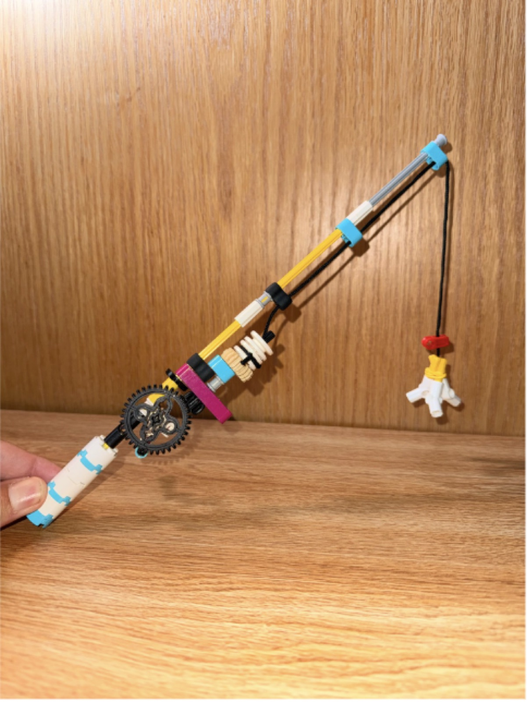
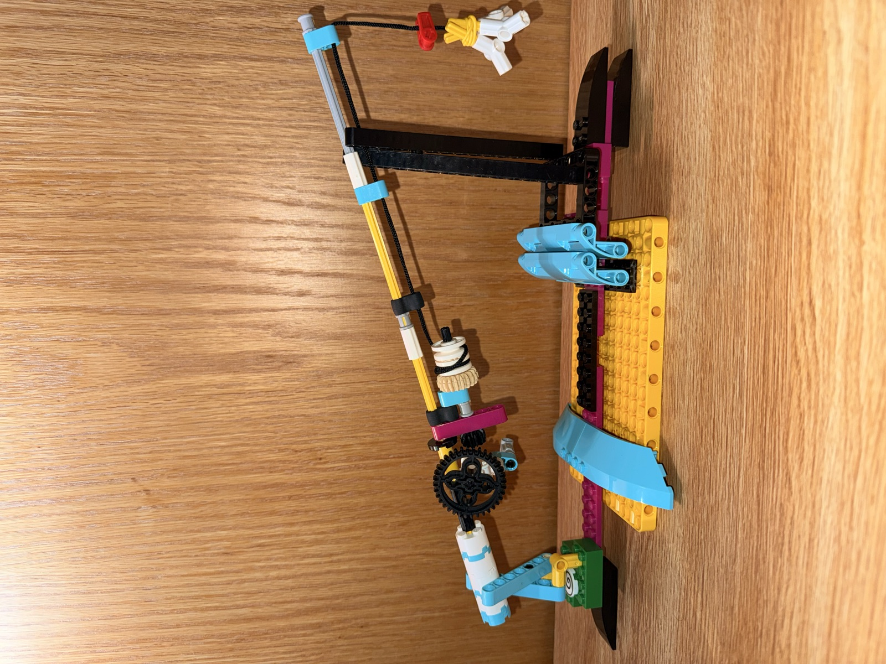
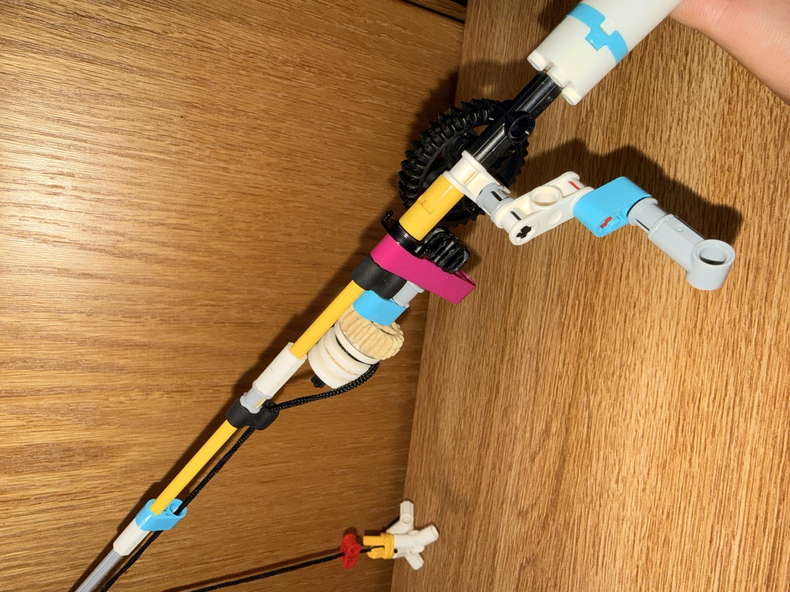

04 M — Sheet 03 / 10
Here is a LEGO Build all about me...

For this build I made a fishing rod. I've always loved fishing, it brings me peace. No stress on your mind when you're out there. Growing up it was all I wanted to be doing, and most of my "important" life decisions were made while fishing.
I was short on pieces and colors, so the rod is whatever was left over. The reel is as functional as I could make it. The hook is pure "do what you can with what you have." The base honestly looks more like wreckage than a stand.

The reel runs on a gear ratio: the crank turns a big gear, that one drives a smaller one, and the small one shares an axle with the barrel. Turn the crank, the line winds on.

The constraint was the hard part. SPIKE Prime set only, none of the robotics pieces. The whole time I was designing the reel (and especially attaching it to the rod) I kept planning around some piece that would've been perfect, then finding out it wasn't in the kit. The reel didn't come out at the size I wanted. I built what the box allowed.
With more pieces I'd make a longer handle and a better reel: a lock so the barrel can't unwind on its own, and something to move the barrel up and down as it turns, so the line lays even instead of piling up in one spot.